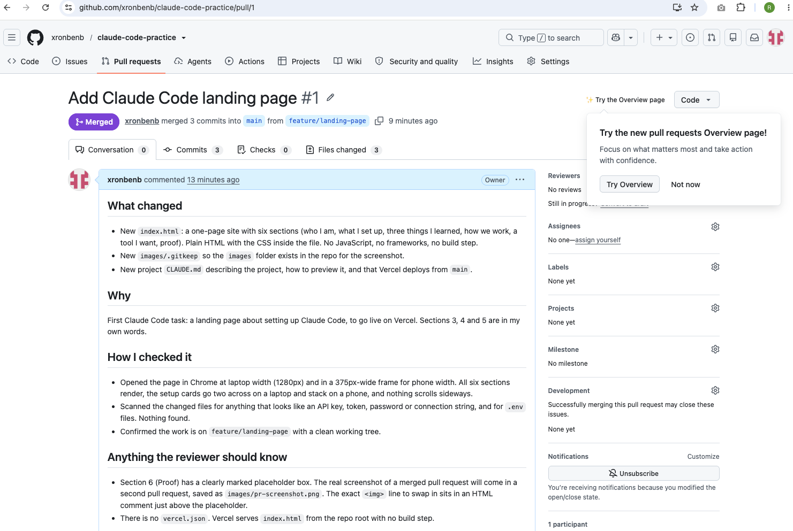

Who I am
I'm Ronben Baute, SEO Specialist at Opt Digital.
This page is my first project built with Claude Code. It is written in plain HTML and CSS, lives in a public GitHub repo, and is published on Vercel.
What I set up
-
VS Code
The editor where the files are written. Claude Code runs inside it as an extension.
-
Claude Code
The AI assistant that reads the repo, edits files and runs commands with me.
-
Git
Tracks every change as a snapshot, so work can be reviewed and undone.
-
GitHub
Hosts the repo online and is where pull requests are reviewed.
-
Vercel
Publishes the
mainbranch as a live web page.
Three things I learned
-
Keep secrets out of the repo
All API keys and private information should be saved in
.envfiles. Nothing important should go out public. I ask for a security review to make sure API keys are not exposed.One extra detail: the
.envfile only stays private if it is listed in.gitignore, so Git never commits it. -
Plan mode matters
Describing the goal clearly, and the features I want, in the instructions. Claude should ask me questions first before executing the instructions, to make sure everything goes according to the output I want.
-
How MCP relates to APIs and Python scripts
MCP is a standard for connecting AI applications to tools. MCP servers can use APIs or Python scripts behind the scenes to perform or execute the instructions, but a Python script can also call an API directly without MCP.
How we work
The steps from a new branch to a live page, as I understand them. The grey tag is the Git word for each step.
- I'll make my own copy of the code to work on, so the real version stays untouched. branch
- I'll work with Claude to build or make the changes. edit
- I'll run, test, optimise and prove that the changes work. check
- I'll save a snapshot with a short note detailing what was changed. commit
- Push the snapshots to GitHub. push
- I'll pull up a request and ask for the changes to be added to the real version. pull request
- Will reviews the changes and may ask for fixes. review
- Once approved, Will merges the changes into the main version. merge
- The updated version is then deployed so users can access it. deploy
A tool I want
The job
I'd like Claude to help run a weekly SEO audit and performance review across the campaigns I manage, using data from Google Search Console, Semrush, Google Analytics and Screaming Frog.
What it would look for
- Keywords that lost rankings, and pages with significant traffic or keyword losses.
- Content that needs refreshing.
- Technical issues such as indexing problems, duplicate content and site speed.
- Campaign wins, including ranking gains, traffic growth and strong-performing pages.
Each report should explain the campaign's current status, whether improving, stable, declining or mixed, even when no major issues are found, and identify evidence-backed factors that may explain its performance.
How it could work
The tool would compare results with previous periods, distinguish confirmed findings from possible causes, and investigate whether changes coincide with Google updates without assuming causation.
The output would be a concise weekly report covering overall campaign health, wins, issues, affected pages and keywords, supporting evidence and recommended next steps. Recommendations should follow the 80/20 rule, prioritising actions likely to deliver the greatest benefit for the least effort, including opportunities to build on what is already working.
What it would save me
Time gathering data and reviewing each campaign manually, giving me more time to implement improvements, make strategic decisions and communicate results.
Proof
A screenshot of a pull request I merged.
